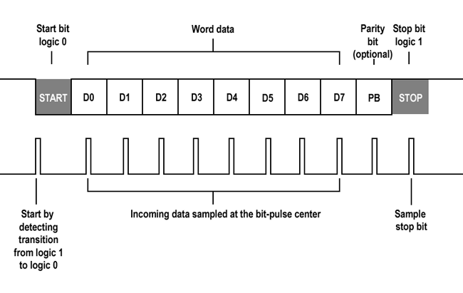
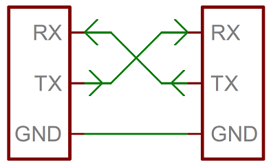

UART — Serial communication
2) Concepts
2.1 What is UART?
UART (Universal Asynchronous Receiver/Transmitter) transmits data bit by bit without a shared clock. Each end configures baud rate, data bits, parity, and stop bits. Signals: TX (transmit) and RX (receive).
Typical frame:

- Start bit: 0 → marks the beginning of the byte.
- Data bits: 5–9 (normally 8).
- Parity: None/Even/Odd for simple error detection.
- Stop bits: 1 or 2 (high level).
In 8N1, a byte takes 10 bits (1 start + 8 data + 1 stop).
2.2 bps vs baud
- bps (bits per second): actual bit rate (includes start/stop/parity).
- Baud (symbols/s): in UART each symbol = 1 bit ⇒ baud = bps.
- In modulated systems one symbol can carry several bits (there baud ≠ bps).
Example at 115200 baud:
T_bit ≈ 1/115200 ≈ 8.68 µs. An 8N1 character (10 bits) takes ~86.8 µs ⇒ ~11.5 kB/s.
Theoretical maximum speed
According to the datasheet, it can reach up to ~1.5 Mbaud without noticeable errors with a short cable and stable hardware. In practice, the typically stable values are:
- 9600 / 19200 / 38400 / 57600 / 115200 bps (PC standards).
- 1,000,000 bps (sometimes used for MCU-to-MCU communication).
The higher the speed, the greater the error margin and noise; the longer the cable, the higher the probability of errors.
UART can work correctly as long as the error between transmitter and receiver stays below ±3%.
2.3 UART vs USART
| Feature | UART | USART |
|---|---|---|
| Clock | No (asynchronous) | Can be yes (synchronous) or no (asynchronous) |
| Lines | TX, RX | TX, RX, CLK (synchronous mode) |
| Complexity | Lower | Higher, more flexible |
| Typical use | Consoles, simple modules | Modems/links requiring a clock |
2.4 Pi Pico 2 UART hardware
Hardware UARTs: UART0 and UART1 (can be used simultaneously).
Default pins:
- UART0 → TX GP0, RX GP1
- UART1 → TX GP8, RX GP9
Compatible alternative pins:
| UART | Possible TX | Possible RX |
|---|---|---|
| UART0 | GP0, GP12, GP16, GP28 | GP1, GP13, GP17, GP29 |
| UART1 | GP4, GP8, GP20 | GP5, GP9, GP21 |

2.5 ASCII (American Standard Code for Information Interchange)
The ASCII standard defines 128 symbols (0–127) including:
| Type | Example | Decimal range | Binary example |
|---|---|---|---|
| Control | \n, \r, \t |
0–31 | 00001010 (LF) |
| Digits | 0–9 |
48–57 | 00110000–00111001 |
| Uppercase letters | A–Z |
65–90 | 01000001–01011010 |
| Lowercase letters | a–z |
97–122 | 01100001–01111010 |
| Common symbols | , . ; ? ! etc. |
33–47 and others | 00100001 (!) |
Each character (char) is an 8-bit integer (0–255).
When you do uart_putc(UART_ID, 'A');, the value 65 decimal (0x41) is sent.
When you receive a byte (uart_getc() returns a char), you can interpret it as a number or a letter:
2.6 FIFO (First In First Out)
A FIFO (First In, First Out) is a small storage queue inside the UART peripheral. On the RP2350, each UART has a 16-byte FIFO for both RX and TX.
Operation:
- Each received byte enters the RX FIFO.
- The CPU (or DMA) extracts them with uart_getc().
- If the CPU falls behind and the FIFO fills up → new bytes are lost (overrun).
Why it matters:
- In polling mode, the FIFO acts as a small "shock absorber" between hardware and software.
- In interrupt mode, the handler must drain the FIFO quickly (reading all available bytes) to avoid saturating it.
- In fast streams, an external circular buffer and/or DMA becomes essential.
3) USB CDC Serial Monitor examples
3.1 Configuring USB-CDC
USB-CDC makes the Pico appear as a COM/ttyACM port.
Usual format: 115200 8N1.
Line endings: use \r\n or configure the terminal (CR/LF).
Before using UART or USB-CDC, first modify the CMakeLists.txt:
# Look for the line:
pico_enable_stdio_usb(timer 1) # Default is 0; change it to 1 to enable
# Also add hardware_uart in the libraries section:
target_link_libraries(timer
pico_stdlib
hardware_uart
)
3.2 Echo example code
#include "pico/stdlib.h"
#include <stdio.h>
int main() {
stdio_init_all();
sleep_ms(2000); // time for USB enumeration
printf("\n[Pico USB] Connection ready. Type something and press Enter.\n");
while (true) {
int ch = getchar_timeout_us(0);
if (ch != PICO_ERROR_TIMEOUT) {
printf("Echo: %c\n", (char)ch);
}
sleep_ms(10);
}
}
3.3 Testing with the Serial Monitor in VS Code
- Open Extensions (
Ctrl+Shift+X) and search for Serial Monitor (Microsoft). Install it. - Connect the Pico; wait for the USB Serial Device COMn port to appear.
- Command Palette (
Ctrl+Shift+P) →Serial Monitor: Select Serial Port→ choose the port. Serial Monitor: Start Monitoring→ select 115200.- Configure CR/LF as needed; for
printf("\r\n")use CR+LF.
4) Communication between two Picos (main/support) — UART0
4.1 UART wiring
Connection:
| Pico Main | Pico Support |
|---|---|
| GP0 (TX) | GP1 (RX) |
| GP1 (RX) | GP0 (TX) |
| GND | GND |
4.2 Function glossary (Pico SDK)
| Function | Description | Example |
|---|---|---|
stdio_init_all() |
Enables stdio (USB/UART) per CMake | stdio_init_all(); |
printf() |
Prints to stdio | printf("Hello\n"); |
getchar_timeout_us(us) |
Reads a char with a timeout | getchar_timeout_us(0); |
uart_init(uart, baud) |
Initializes the UART at a baud rate | uart_init(uart0,115200); |
uart_set_format(uart, db, sb, par) |
Configures 8N1/E/O | uart_set_format(uart0,8,1,UART_PARITY_NONE); |
uart_puts/putc() |
Sends a string/character | uart_puts(uart0,"Hi\r\n"); |
uart_is_readable() |
Any RX data? | if(uart_is_readable(u0)) |
uart_getc() |
Reads 1 RX byte | char c=uart_getc(u0); |
gpio_set_function(pin, GPIO_FUNC_UART) |
Assigns a pin to the UART | gpio_set_function(0,GPIO_FUNC_UART); |
irq_set_exclusive_handler(irq,h) |
Registers an ISR | irq_set_exclusive_handler(UART0_IRQ,h); |
uart_set_irq_enables(u,rx,tx) |
Turns RX/TX IRQs on | uart_set_irq_enables(u0,true,false); |
4.3 Sending
#include "pico/stdlib.h"
#include "hardware/uart.h"
#include <stdio.h>
#define UART_ID uart0
#define BAUD_RATE 115200
#define TX_PIN 0
#define RX_PIN 1
int main() {
stdio_init_all();
gpio_set_function(TX_PIN, GPIO_FUNC_UART);
gpio_set_function(RX_PIN, GPIO_FUNC_UART);
uart_init(UART_ID, BAUD_RATE);
uart_set_format(UART_ID, 8, 1, UART_PARITY_NONE);
printf("[MAIN] Sending messages every second...\n");
int counter = 0;
while (true) {
char msg[64];
sprintf(msg, "Message %d from MAIN\r\n", counter++);
uart_puts(UART_ID, msg);
sleep_ms(1000);
}
}
Polling: main() checks whether data is available (uart_is_readable()). Simple, but it consumes CPU and can lose data if the CPU stays busy too long (UART FIFO ≈ 16 bytes).
4.4 Receiving
#include "pico/stdlib.h"
#include "hardware/uart.h"
#include <stdio.h>
#define BAUD_RATE 115200
#define TX_PIN 0
#define RX_PIN 1
int main() {
stdio_init_all();
gpio_set_function(TX_PIN, GPIO_FUNC_UART);
gpio_set_function(RX_PIN, GPIO_FUNC_UART);
uart_init(uart0, BAUD_RATE);
uart_set_format(UART_ID, 8, 1, UART_PARITY_NONE);
printf("[SUPPORT] Waiting for messages (polling)...\n");
while (true) {
if (uart_is_readable(uart0)) {
char c = uart_getc(uart0);
printf("%c", c);
}
}
}
Interrupts: the hardware calls a handler when a byte arrives; the ISR must be fast and dump the data into a circular buffer in RAM for later processing. Efficient and robust at high baud rates.
#include "pico/stdlib.h"
#include "hardware/uart.h"
#include "hardware/irq.h"
#include <stdio.h>
#define UART_ID uart0
#define BAUD_RATE 115200
#define TX_PIN 0
#define RX_PIN 1
// Simple circular buffer
#define BUF_SIZE 256
volatile char buffer[BUF_SIZE];
volatile uint16_t head = 0, tail = 0;
static void on_uart_rx(void) {
while (uart_is_readable(uart0)) {
char c = uart_getc(uart0);
buffer[head] = c;
head = (head + 1) % BUF_SIZE; // no overflow handling, for simplicity
}
}
int main() {
stdio_init_all();
gpio_set_function(TX_PIN, GPIO_FUNC_UART);
gpio_set_function(RX_PIN, GPIO_FUNC_UART);
uart_init(uart0, BAUD_RATE);
uart_set_format(uart0, 8, 1, UART_PARITY_NONE);
// Configure the UART0 IRQ
irq_set_exclusive_handler(UART0_IRQ, on_uart_rx);
irq_set_enabled(UART0_IRQ, true);
uart_set_irq_enables(uart0, true, false); // RX interrupt ON
printf("[SUPPORT IRQ] Waiting for data with interrupts...\n");
while (true) {
// Drain the buffer to the USB console
while (tail != head) {
char c = buffer[tail];
tail = (tail + 1) % BUF_SIZE;
printf("%c", c);
}
sleep_ms(10);
}
}
5) Errors
5.1 Common application problems
- USB port doesn't show up: charge-only cable; enable
pico_enable_stdio_usb(... 1)and wait ~2 s afterstdio_init_all(). - Garbled text: baud rate/format mismatch; use 115200 8N1.
- No echo over UART: cross TX↔RX, share GND, set
GPIO_FUNC_UART. - Data loss at high baud rates: use IRQ + circular buffer or DMA; increase
BUF_SIZE. - Odd CR/LF behavior: use
\r\nor set the terminal to CR+LF.
5.2 UART communication errors
| Error type | Cause | How to detect it | Typical effect |
|---|---|---|---|
| Framing Error | The receiver fails to detect the Stop bit correctly (noise or baud rate mismatch). | FRAMING_ERR bit in the status register (UARTx_FRSR). |
Received data is discarded or misinterpreted. |
| Parity Error | When a parity bit (even/odd) is used and it doesn't match the expected value. | PARITY_ERR bit. |
Detection of single-bit corruption. |
| Overrun Error | The receiver got a new byte before the software read the previous one from the FIFO. | OVERRUN_ERR bit. |
The oldest byte in the buffer is lost. |
| Break Condition | The TX line stays low for longer than one byte time. |
BREAK_DETECT bit. |
May indicate a disconnection or serious hardware fault. |
| Noise / Glitches | Electrical noise or interference between wires. | Oscilloscope / logic analyzer. | Spurious bytes, random framing errors. |
5.3 Error handling in code
| Register | Function |
|---|---|
UARTx_FR (Flag Register) |
Shows FIFO and line status (busy, empty, etc.) |
UARTx_RSR / UARTx_ECR (Receive Status / Error Clear) |
Contains error flags: FE, PE, BE, OE |
| Bit | Name | Meaning |
|---|---|---|
| 0 | FE | Framing Error — No valid stop bit detected |
| 1 | PE | Parity Error — Incorrect parity |
| 2 | BE | Break Error — RX line held low for too long |
| 3 | OE | Overrun Error — A byte was lost because the FIFO was full |
#include "hardware/uart.h"
if (uart_is_readable(uart0)) {
int c = uart_getc(uart0); // Read a character
if (uart_get_hw(uart0)->rsr & (UART_UARTDR_FE_BITS | UART_UARTDR_PE_BITS | UART_UARTDR_OE_BITS)) {
printf("⚠️ Error detected on UART\n");
uart_get_hw(uart0)->rsr = 0; // Clear errors
}
}